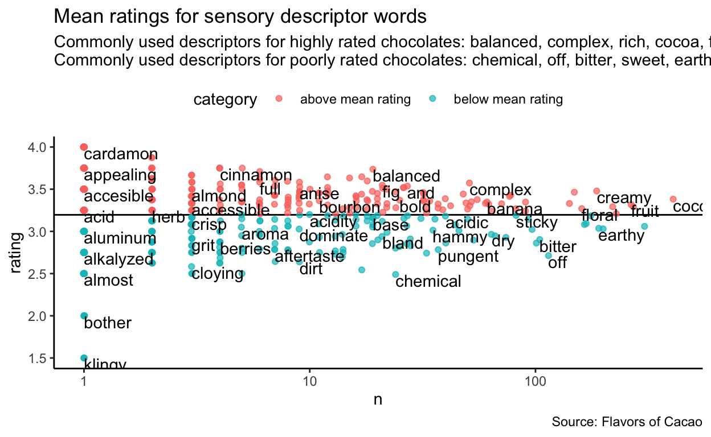

Goals for 2022
This dataset is from Week 3 of 2022 (Tidy Tuesday dataset)[https://github.com/rfordatascience/tidytuesday/blob/master/data/2022/2022-01-18/readme.md], and comes from th Flavors of Cacao.
chocolate <- readr::read_csv('https://raw.githubusercontent.com/rfordatascience/tidytuesday/master/data/2022/2022-01-18/chocolate.csv')
Taking a glimpse at the data:
glimpse(chocolate)
Rows: 2,530
Columns: 10
$ ref <dbl> 2454, 2458, 2454, 2542, 254…
$ company_manufacturer <chr> "5150", "5150", "5150", "51…
$ company_location <chr> "U.S.A.", "U.S.A.", "U.S.A.…
$ review_date <dbl> 2019, 2019, 2019, 2021, 202…
$ country_of_bean_origin <chr> "Tanzania", "Dominican Repu…
$ specific_bean_origin_or_bar_name <chr> "Kokoa Kamili, batch 1", "Z…
$ cocoa_percent <chr> "76%", "76%", "76%", "68%",…
$ ingredients <chr> "3- B,S,C", "3- B,S,C", "3-…
$ most_memorable_characteristics <chr> "rich cocoa, fatty, bready"…
$ rating <dbl> 3.25, 3.50, 3.75, 3.00, 3.0…head(chocolate)
# A tibble: 6 × 10
ref company_manufac… company_location review_date country_of_bean…
<dbl> <chr> <chr> <dbl> <chr>
1 2454 5150 U.S.A. 2019 Tanzania
2 2458 5150 U.S.A. 2019 Dominican Repub…
3 2454 5150 U.S.A. 2019 Madagascar
4 2542 5150 U.S.A. 2021 Fiji
5 2546 5150 U.S.A. 2021 Venezuela
6 2546 5150 U.S.A. 2021 Uganda
# … with 5 more variables: specific_bean_origin_or_bar_name <chr>,
# cocoa_percent <chr>, ingredients <chr>,
# most_memorable_characteristics <chr>, rating <dbl>The information below is taken from the tidytuesday website:
# using googlesheets4
info_table <- read_sheet("https://docs.google.com/spreadsheets/d/198rFQuCTqdgQ_Ek451D8FCRY3jXyGmfGzsGD6Bzftug/edit?usp=sharing")
info_table %>%
kbl() %>%
kable_styling()
| variable | class | description |
|---|---|---|
| ref | integer | Reference ID, The highest REF numbers were the last entries made. |
| company_manufacturer | character | Manufacturer name |
| company_location | character | Manufacturer region |
| review_date | integer | Review date (year) |
| country_of_bean_origin | character | Country of origin |
| specific_bean_origin_or_bar_name | character | Specific bean or bar name |
| cocoa_percent | character | Cocoa percent (% chocolate) |
| ingredients | character | Ingredients, (“#” = represents the number of ingredients in the chocolate; B = Beans, S = Sugar, S* = Sweetener other than white cane or beet sugar, C = Cocoa Butter, V = Vanilla, L = Lecithin, Sa = Salt) |
| most_memorable_characteristics | character | Most Memorable Characteristics column is a summary review of the most memorable characteristics of that bar. Terms generally relate to anything from texture, flavor, overall opinion, etc. separated by ‘,’ |
| rating | double | rating between 1-5 |
# to see unique values in every column
chocolate %>%
# summarise_all(list(~n_distinct(.))) %>% # superseded
summarise(across(everything(), list(~n_distinct(.)))) %>%
pivot_longer(everything())
# A tibble: 10 × 2
name value
<chr> <int>
1 ref_1 630
2 company_manufacturer_1 580
3 company_location_1 67
4 review_date_1 16
5 country_of_bean_origin_1 62
6 specific_bean_origin_or_bar_name_1 1605
7 cocoa_percent_1 46
8 ingredients_1 22
9 most_memorable_characteristics_1 2487
10 rating_1 12The dataset has 2530 rows, 10 variables.
There are repeated entries all the columns
Top 20 Chocolate Manufactorers
chocolate %>%
count(company_manufacturer, sort = T) %>%
slice_head(n = 20) %>%
ggplot(aes(fct_reorder(company_manufacturer, n), n, label = n)) +
geom_col(fill = "sienna") +
geom_text(nudge_y = 1.2) +
labs(title = "Top 20 Chocolate Manufacturers",
x = "",
y = "",
caption = "Soure: http://flavorsofcacao.com/chocolate_database.html") +
coord_flip() +
scale_y_continuous(expand = c(0,0), limits = c(0, 60)) +
theme_classic() +
theme(axis.text = element_text(size = 12),
title = element_text(size = 16, face = 'bold'))
Writing a function for top 20 by count, for any column
plot_top_twenty <- function(df, var_x) {
sorted <- df %>%
count({{var_x}}, sort = T) %>%
slice_head(n = 20)
max_n <- max(sorted$n) + 100 # for y axis limit
sorted %>%
ggplot(aes(fct_reorder({{var_x}}, n), n, label = n)) +
geom_col(fill = "sienna") +
# geom_text(nudge_y = 1.2) +
coord_flip() +
labs(title=paste0("Top 20 for ",rlang::as_label(rlang::enquo(var_x))),
x = "",
y = "",
caption = "Soure: http://flavorsofcacao.com/chocolate_database.html") +
scale_y_continuous(expand = c(0,0), limits = c(0, max_n)) +
theme_classic() +
theme(axis.text = element_text(size = 12),
title = element_text(size = 16, face = 'bold'))
}
Soma: A Canadian Chocolate Company
chocolate %>%
filter(company_manufacturer == "Soma")
# A tibble: 56 × 10
ref company_manufacturer company_location review_date
<dbl> <chr> <chr> <dbl>
1 377 Soma Canada 2009
2 387 Soma Canada 2009
3 377 Soma Canada 2009
4 387 Soma Canada 2009
5 387 Soma Canada 2009
6 387 Soma Canada 2009
7 607 Soma Canada 2010
8 676 Soma Canada 2011
9 676 Soma Canada 2011
10 688 Soma Canada 2011
# … with 46 more rows, and 6 more variables:
# country_of_bean_origin <chr>,
# specific_bean_origin_or_bar_name <chr>, cocoa_percent <chr>,
# ingredients <chr>, most_memorable_characteristics <chr>,
# rating <dbl>plot_top_twenty(chocolate, company_location) +
geom_text(nudge_y = 30)
Most of the chocolates are from USA.
glimpse(chocolate)
Rows: 2,530
Columns: 10
$ ref <dbl> 2454, 2458, 2454, 2542, 254…
$ company_manufacturer <chr> "5150", "5150", "5150", "51…
$ company_location <chr> "U.S.A.", "U.S.A.", "U.S.A.…
$ review_date <dbl> 2019, 2019, 2019, 2021, 202…
$ country_of_bean_origin <chr> "Tanzania", "Dominican Repu…
$ specific_bean_origin_or_bar_name <chr> "Kokoa Kamili, batch 1", "Z…
$ cocoa_percent <chr> "76%", "76%", "76%", "68%",…
$ ingredients <chr> "3- B,S,C", "3- B,S,C", "3-…
$ most_memorable_characteristics <chr> "rich cocoa, fatty, bready"…
$ rating <dbl> 3.25, 3.50, 3.75, 3.00, 3.0…plot_top_twenty(chocolate, country_of_bean_origin) +
geom_text(nudge_y = 10)
Most of the beans are from Venezuela, Peru, Dominican Republic.
chocolate %>%
count(review_date) %>%
ggplot(aes(review_date, n), label = n) +
geom_point(size = 3) +
geom_line(size = 1) +
geom_label(aes(label = n), hjust = 0,
vjust = 0, nudge_y = 1, col = "sienna", size = 5) +
labs(title = "Number of reviews by year",
x = "Year",
y = "No. of Reviews",
caption = "Source: http://flavorsofcacao.com/chocolate_database.html") +
scale_y_continuous(limits = c(0, 300)) +
scale_x_continuous(limits = c(2006, 2022),
n.breaks = 17 ) +
theme_classic() +
theme(axis.text = element_text(size = 12),
axis.title = element_text(size = 14),
axis.title.y = element_blank(),
axis.text.y = element_blank(),
axis.ticks.y = element_blank(),
title = element_text(size = 16, face = "bold"))
Review years are from 2006 to 2021.
chocolate %>%
skimr::skim()
| Name | Piped data |
| Number of rows | 2530 |
| Number of columns | 10 |
| _______________________ | |
| Column type frequency: | |
| character | 7 |
| numeric | 3 |
| ________________________ | |
| Group variables | None |
Variable type: character
| skim_variable | n_missing | complete_rate | min | max | empty | n_unique | whitespace |
|---|---|---|---|---|---|---|---|
| company_manufacturer | 0 | 1.00 | 2 | 39 | 0 | 580 | 0 |
| company_location | 0 | 1.00 | 4 | 21 | 0 | 67 | 0 |
| country_of_bean_origin | 0 | 1.00 | 4 | 21 | 0 | 62 | 0 |
| specific_bean_origin_or_bar_name | 0 | 1.00 | 3 | 51 | 0 | 1605 | 0 |
| cocoa_percent | 0 | 1.00 | 3 | 6 | 0 | 46 | 0 |
| ingredients | 87 | 0.97 | 4 | 14 | 0 | 21 | 0 |
| most_memorable_characteristics | 0 | 1.00 | 3 | 37 | 0 | 2487 | 0 |
Variable type: numeric
| skim_variable | n_missing | complete_rate | mean | sd | p0 | p25 | p50 | p75 | p100 | hist |
|---|---|---|---|---|---|---|---|---|---|---|
| ref | 0 | 1 | 1429.80 | 757.65 | 5 | 802 | 1454.00 | 2079.0 | 2712 | ▆▇▇▇▇ |
| review_date | 0 | 1 | 2014.37 | 3.97 | 2006 | 2012 | 2015.00 | 2018.0 | 2021 | ▃▅▇▆▅ |
| rating | 0 | 1 | 3.20 | 0.45 | 1 | 3 | 3.25 | 3.5 | 4 | ▁▁▅▇▇ |
Remove na values in ingredients column
chocolate_cleaned <-
chocolate %>%
mutate(cocoa_percent = parse_number(cocoa_percent)) %>%
separate(ingredients, c("number_of_ingredients", "type_of_ingredients"),
sep = "-") %>%
mutate(type_of_ingredients = str_trim(type_of_ingredients),
number_of_ingredients = as.numeric(number_of_ingredients)) %>%
drop_na()
glimpse(chocolate_cleaned)
Rows: 2,443
Columns: 11
$ ref <dbl> 2454, 2458, 2454, 2542, 254…
$ company_manufacturer <chr> "5150", "5150", "5150", "51…
$ company_location <chr> "U.S.A.", "U.S.A.", "U.S.A.…
$ review_date <dbl> 2019, 2019, 2019, 2021, 202…
$ country_of_bean_origin <chr> "Tanzania", "Dominican Repu…
$ specific_bean_origin_or_bar_name <chr> "Kokoa Kamili, batch 1", "Z…
$ cocoa_percent <dbl> 76, 76, 76, 68, 72, 80, 68,…
$ number_of_ingredients <dbl> 3, 3, 3, 3, 3, 3, 3, 4, 4, …
$ type_of_ingredients <chr> "B,S,C", "B,S,C", "B,S,C", …
$ most_memorable_characteristics <chr> "rich cocoa, fatty, bready"…
$ rating <dbl> 3.25, 3.50, 3.75, 3.00, 3.0…chocolate_cleaned %>%
summarise_at(c("cocoa_percent", "number_of_ingredients"),
list(min = min,
max = max,
median = median,
mean = mean)) %>%
pivot_longer(everything()) %>%
arrange(name)
# A tibble: 8 × 2
name value
<chr> <dbl>
1 cocoa_percent_max 100
2 cocoa_percent_mean 71.5
3 cocoa_percent_median 70
4 cocoa_percent_min 42
5 number_of_ingredients_max 6
6 number_of_ingredients_mean 3.04
7 number_of_ingredients_median 3
8 number_of_ingredients_min 1 Lowest cocoa content:
chocolate_cleaned %>%
filter(cocoa_percent == 42) %>%
select(company_location, country_of_bean_origin, type_of_ingredients, most_memorable_characteristics, rating)
# A tibble: 1 × 5
company_location country_of_bean_… type_of_ingredi… most_memorable_…
<chr> <chr> <chr> <chr>
1 Martinique Martinique B,S,V,L gritty, sweet, …
# … with 1 more variable: rating <dbl>Highest cocoa content:
chocolate_cleaned %>%
filter(cocoa_percent == 100) %>%
select(company_location, country_of_bean_origin, type_of_ingredients, most_memorable_characteristics, rating)
# A tibble: 7 × 5
company_location country_of_bean_… type_of_ingredi… most_memorable_…
<chr> <chr> <chr> <chr>
1 Italy Ecuador B fatty, controll…
2 U.K. Ecuador B candy,uncontrol…
3 New Zealand Samoa B bitter, intense…
4 U.S.A. Blend B sharp fruit, in…
5 France Madagascar B,C fatty, mild fru…
6 Canada Madagascar B creamy, tart, b…
7 Canada Ecuador B floral, bourbon…
# … with 1 more variable: rating <dbl>Cocoa content distribution:
chocolate_cleaned %>%
ggplot(aes(cocoa_percent)) +
geom_histogram(fill = "sienna", col = "black") +
labs(title = "Cocoa Percent Distribution in Dark Chocolate Bars",
subtitle = "Cocoa percent ranges from 42 - 100%, with mean cocoa percent at 71.5%",
caption = "Source: http://flavorsofcacao.com/chocolate_database.html") +
theme_classic()
chocolate_cleaned %>%
ggplot(aes(number_of_ingredients)) +
geom_bar(fill = "sienna", col = "black") +
scale_x_continuous(limits = c(0, 6), n.breaks = 7) +
scale_y_continuous(expand = c(0,0)) +
labs(title = "Distribution of number of ingredients in dark chocolate bars",
subtitle = "Most dark chocolate bars have 2 - 3 ingredients",
caption = "Source: http://flavorsofcacao.com/chocolate_database.html") +
theme_classic()
chocolate_cleaned %>%
ggplot(aes(x = rating)) +
geom_histogram(binwidth = 0.2, fill = "sienna") +
labs(title = "Distribution of chocolate ratings",
subtitle = "Median chocolate rating is 3.25") +
geom_vline(xintercept = median(chocolate_cleaned$rating)) +
theme_classic()
max(chocolate_cleaned$rating) # 4
[1] 4# check number of countries
countries_choc <- chocolate_cleaned %>%
count(country_of_bean_origin) %>%
arrange(n)
# median number of reviews
median(countries_choc$n) # 40.5
[1] 12# distribution plot for number of reviews
countries_choc %>%
ggplot(aes(n)) +
geom_histogram(fill = 'sienna', col = 'black') +
geom_vline(aes(xintercept = median(n))) +
labs(title = "Distribution of number of reviews by country of bean origin") +
theme_classic()
# ratings by country of bean origin
countries_choc_df <- chocolate_cleaned %>%
group_by(country_of_bean_origin) %>%
summarise(min = min(rating),
mean = mean(rating),
median = median(rating),
max = max(rating),
n = n()) %>%
filter(n > 40) # left with 31 countries
countries_choc_df
# A tibble: 18 × 6
country_of_bean_origin min mean median max n
<chr> <dbl> <dbl> <dbl> <dbl> <int>
1 Belize 2.5 3.24 3.25 4 74
2 Blend 1 3.09 3 4 144
3 Bolivia 2 3.18 3.25 4 79
4 Brazil 1.75 3.26 3.25 4 77
5 Colombia 2 3.21 3.25 4 78
6 Costa Rica 2 3.15 3.25 4 42
7 Dominican Republic 2 3.22 3.25 3.75 220
8 Ecuador 1.5 3.21 3.25 4 201
9 Guatemala 2.5 3.26 3.25 4 62
10 Madagascar 2.25 3.27 3.25 4 171
11 Mexico 2 3.17 3.12 4 54
12 Nicaragua 2 3.26 3.25 4 100
13 Papua New Guinea 2.5 3.28 3.25 4 49
14 Peru 2 3.23 3.25 4 231
15 Tanzania 2 3.24 3.25 4 78
16 Trinidad 2.5 3.24 3.25 3.75 42
17 Venezuela 2 3.24 3.25 4 246
18 Vietnam 2.75 3.29 3.25 4 73# plot
countries_choc_df %>%
ggplot(aes(x = fct_reorder(country_of_bean_origin, mean),
y = mean, label = mean)) +
geom_point(stat = "identity", col = "sienna", size = 2) +
geom_errorbar(aes(ymin = min, ymax = max),
col = "sienna") +
labs(title = "Mean rating for dark chocolate bars by countries (with number of reviews > 40)",
subtitle = "Cuba, Vietnam, Papua New Guinea are the top 3 countries by ratings",
x = "Country of bean origin",
y = "Mean rating",
caption = "Source: Flavors of Cacao") +
coord_flip() +
theme_classic()
I didn’t notice that there is a “blend” category for countries until now. This probably means that the beans could have been sourced from different countries.
ingredients <- chocolate_cleaned %>%
group_by(type_of_ingredients) %>%
summarise(mean = mean(rating),
min = min(rating),
max = max(rating),
n = n()) %>%
arrange(desc(mean)) %>%
filter(n > 15) %>%
mutate(full_ingredients =
str_replace_all(type_of_ingredients, "B", "beans")) %>%
mutate(full_ingredients = str_replace_all(full_ingredients, "C", "cocoa butter")) %>%
mutate(full_ingredients = str_replace_all(full_ingredients, "L", "lecithin")) %>%
mutate(full_ingredients = str_replace_all(full_ingredients, "V", "vanilla")) %>%
mutate(full_ingredients = str_replace_all(full_ingredients, "Sa", "salt")) %>%
mutate(full_ingredients = str_replace_all(full_ingredients, "\\*", "weeteners")) %>%
mutate(full_ingredients = str_replace_all(full_ingredients, "Sweeteners", "sweeteners")) %>%
mutate(full_ingredients = str_replace_all(full_ingredients, "S", "sugar"))
ingredients
# A tibble: 7 × 6
type_of_ingredients mean min max n full_ingredients
<chr> <dbl> <dbl> <dbl> <int> <chr>
1 B,S,C 3.28 1.5 4 999 beans,sugar,cocoa butter
2 B,S 3.23 2 4 718 beans,sugar
3 B,S,C,L 3.21 1.5 4 286 beans,sugar,cocoa butte…
4 B,S*,C,Sa 3.11 1.5 3.75 20 beans,sweeteners,cocoa …
5 B,S,C,V,L 3.09 1 4 184 beans,sugar,cocoa butte…
6 B,S,C,V 2.98 2 4 141 beans,sugar,cocoa butte…
7 B,S* 2.96 2 3.5 31 beans,sweeteners # plot
ingredients %>%
ggplot(aes(x = fct_reorder(full_ingredients, mean),
y = mean, label = mean)) +
geom_point(stat = "identity", col = "sienna", size = 3) +
geom_errorbar(aes(ymin = min, ymax = max),
col = "sienna",
width = 0.2) +
labs(title = "Ingredients and chocolate bar ratings (with number of reviews > 15)",
subtitle = "The highest ratings come from chocolates with beans, sugar, cocoa butter",
x = "",
y = "Mean rating",
caption = "Source: Flavors of Cacao") +
coord_flip() +
theme_classic() +
theme(axis.text = element_text(size = 12))
Cocoa butter is important to suspend and lubricate sugar particles. Cocoa butter enhances the texture of chocolate, and is responsible for the melt-in-your-mouth quality Source:.
Lecithin is an emulsifier, and binds the cocoa solids, sugar and milk to cocoa butter. It is a cheaper alternative to cocoa butter, and typically achieves the same effect at 0.5% for what takes 3-4% cocoa butter to achieve. Source:
Interestingly, salt is added to intensify the body’s ability to taste sweetnessSource:. This could be why it is used in combination with dark chocolate bars with sweeteners, so that the chocolate is “perceived” to be as sweet as normal chocolate with sugar added.
Vanilla is usually added to reduce bitterness arising from lower quality beans, and is needed to cover the bitter taste even after adding sugar Source:. I think this could be why chocolates with vanilla added tend to have slightly lower ratings.
This section is adapted from Julia Silge’s blogpost
glimpse(chocolate_cleaned)
Rows: 2,443
Columns: 11
$ ref <dbl> 2454, 2458, 2454, 2542, 254…
$ company_manufacturer <chr> "5150", "5150", "5150", "51…
$ company_location <chr> "U.S.A.", "U.S.A.", "U.S.A.…
$ review_date <dbl> 2019, 2019, 2019, 2021, 202…
$ country_of_bean_origin <chr> "Tanzania", "Dominican Repu…
$ specific_bean_origin_or_bar_name <chr> "Kokoa Kamili, batch 1", "Z…
$ cocoa_percent <dbl> 76, 76, 76, 68, 72, 80, 68,…
$ number_of_ingredients <dbl> 3, 3, 3, 3, 3, 3, 3, 4, 4, …
$ type_of_ingredients <chr> "B,S,C", "B,S,C", "B,S,C", …
$ most_memorable_characteristics <chr> "rich cocoa, fatty, bready"…
$ rating <dbl> 3.25, 3.50, 3.75, 3.00, 3.0…tidy_chocolate <- chocolate_cleaned %>%
unnest_tokens(word, most_memorable_characteristics)
tidy_chocolate %>%
count(word, sort = T)
# A tibble: 533 × 2
word n
<chr> <int>
1 cocoa 407
2 sweet 304
3 nutty 271
4 fruit 265
5 roasty 227
6 mild 219
7 sour 200
8 earthy 190
9 creamy 187
10 intense 175
# … with 523 more rowsglimpse(tidy_chocolate)
Rows: 8,399
Columns: 11
$ ref <dbl> 2454, 2454, 2454, 2454, 245…
$ company_manufacturer <chr> "5150", "5150", "5150", "51…
$ company_location <chr> "U.S.A.", "U.S.A.", "U.S.A.…
$ review_date <dbl> 2019, 2019, 2019, 2019, 201…
$ country_of_bean_origin <chr> "Tanzania", "Tanzania", "Ta…
$ specific_bean_origin_or_bar_name <chr> "Kokoa Kamili, batch 1", "K…
$ cocoa_percent <dbl> 76, 76, 76, 76, 76, 76, 76,…
$ number_of_ingredients <dbl> 3, 3, 3, 3, 3, 3, 3, 3, 3, …
$ type_of_ingredients <chr> "B,S,C", "B,S,C", "B,S,C", …
$ rating <dbl> 3.25, 3.25, 3.25, 3.25, 3.5…
$ word <chr> "rich", "cocoa", "fatty", "…tidy_chocolate %>%
group_by(word) %>%
summarise(n = n(),
rating = mean(rating)) %>%
mutate(category = case_when(rating > mean(rating) ~ "above mean rating",
TRUE ~ "below mean rating")) %>%
ggplot(aes(n, rating, fill = category)) +
geom_hline(yintercept = mean(chocolate$rating), lty = 1) +
geom_jitter(aes(color = category), alpha = 0.7) +
geom_text(aes(label = word),
check_overlap = T,
vjust = "top",
hjust = "left") +
labs(title = "Mean ratings for sensory descriptor words",
subtitle = "Commonly used descriptors for highly rated chocolates: balanced, complex, rich, cocoa, fruit, creamy.\nCommonly used descriptors for poorly rated chocolates: chemical, off, bitter, sweet, earthy, intense.",
caption = "Source: Flavors of Cacao") +
scale_x_log10() +
theme_classic() +
theme(legend.position = "top")

The aim of the modelling is to predict the rating of chocolate bars, using sensory descriptors(word), country of bean origin, cocoa percent, number of ingredients, and ingredients.
set.seed(20220109)
choc_split <- initial_split(chocolate_cleaned, strata = rating)
choc_train <- training(choc_split)
choc_test <- testing(choc_split)
set.seed(202201092)
choc_folds <- vfold_cv(choc_train, strata = rating)
choc_folds
# 10-fold cross-validation using stratification
# A tibble: 10 × 2
splits id
<list> <chr>
1 <split [1646/185]> Fold01
2 <split [1646/185]> Fold02
3 <split [1646/185]> Fold03
4 <split [1646/185]> Fold04
5 <split [1649/182]> Fold05
6 <split [1649/182]> Fold06
7 <split [1649/182]> Fold07
8 <split [1649/182]> Fold08
9 <split [1649/182]> Fold09
10 <split [1650/181]> Fold10choc_recipe <-
recipe(rating ~ # country_of_bean_origin + #cocoa_percent +
number_of_ingredients +
type_of_ingredients +
most_memorable_characteristics, data = choc_train) %>%
# step_dummy(country_of_bean_origin) %>%
step_dummy(type_of_ingredients) %>%
# transform text into features by tokenizing and computing tf-idf
step_tokenize(most_memorable_characteristics) %>%
step_tokenfilter(most_memorable_characteristics, max_tokens = 100) %>%
step_tfidf(most_memorable_characteristics)
# checking if it worked
choc_prep <- prep(choc_recipe) %>%
bake(new_data = NULL)
glimpse(choc_prep)
Rows: 1,831
Columns: 120
$ number_of_ingredients <dbl> 3, 4, 4, 4,…
$ rating <dbl> 3.00, 2.75,…
$ type_of_ingredients_B.C <dbl> 0, 0, 0, 0,…
$ type_of_ingredients_B.S <dbl> 0, 0, 0, 0,…
$ type_of_ingredients_B.S.C <dbl> 1, 0, 0, 0,…
$ type_of_ingredients_B.S.C.L <dbl> 0, 1, 1, 1,…
$ type_of_ingredients_B.S.C.Sa <dbl> 0, 0, 0, 0,…
$ type_of_ingredients_B.S.C.V <dbl> 0, 0, 0, 0,…
$ type_of_ingredients_B.S.C.V.L <dbl> 0, 0, 0, 0,…
$ type_of_ingredients_B.S.C.V.L.Sa <dbl> 0, 0, 0, 0,…
$ type_of_ingredients_B.S.C.V.Sa <dbl> 0, 0, 0, 0,…
$ type_of_ingredients_B.S.L <dbl> 0, 0, 0, 0,…
$ type_of_ingredients_B.S.V <dbl> 0, 0, 0, 0,…
$ type_of_ingredients_B.S.V.L <dbl> 0, 0, 0, 0,…
$ type_of_ingredients_B.S. <dbl> 0, 0, 0, 0,…
$ type_of_ingredients_B.S..C <dbl> 0, 0, 0, 0,…
$ type_of_ingredients_B.S..C.L <dbl> 0, 0, 0, 0,…
$ type_of_ingredients_B.S..C.Sa <dbl> 0, 0, 0, 0,…
$ type_of_ingredients_B.S..C.V <dbl> 0, 0, 0, 0,…
$ type_of_ingredients_B.S..V.L <dbl> 0, 0, 0, 0,…
$ tfidf_most_memorable_characteristics_acidic <dbl> 0.000000, 0…
$ tfidf_most_memorable_characteristics_and <dbl> 0, 0, 0, 0,…
$ tfidf_most_memorable_characteristics_astringent <dbl> 0, 0, 0, 0,…
$ tfidf_most_memorable_characteristics_balanced <dbl> 0, 0, 0, 0,…
$ tfidf_most_memorable_characteristics_banana <dbl> 0.000000, 0…
$ tfidf_most_memorable_characteristics_base <dbl> 0, 0, 0, 0,…
$ tfidf_most_memorable_characteristics_basic <dbl> 0.000000, 0…
$ tfidf_most_memorable_characteristics_berry <dbl> 0, 0, 0, 0,…
$ tfidf_most_memorable_characteristics_bitter <dbl> 0, 0, 0, 0,…
$ tfidf_most_memorable_characteristics_black <dbl> 0, 0, 0, 0,…
$ tfidf_most_memorable_characteristics_bland <dbl> 0, 0, 0, 0,…
$ tfidf_most_memorable_characteristics_bold <dbl> 0, 0, 0, 0,…
$ tfidf_most_memorable_characteristics_bright <dbl> 0, 0, 0, 0,…
$ tfidf_most_memorable_characteristics_brownie <dbl> 0, 0, 0, 0,…
$ tfidf_most_memorable_characteristics_burnt <dbl> 0.000000, 1…
$ tfidf_most_memorable_characteristics_butter <dbl> 0, 0, 0, 0,…
$ tfidf_most_memorable_characteristics_candy <dbl> 0, 0, 0, 0,…
$ tfidf_most_memorable_characteristics_caramel <dbl> 0.000000, 0…
$ tfidf_most_memorable_characteristics_cherry <dbl> 0, 0, 0, 0,…
$ tfidf_most_memorable_characteristics_choco <dbl> 0, 0, 0, 0,…
$ tfidf_most_memorable_characteristics_citrus <dbl> 0, 0, 0, 0,…
$ tfidf_most_memorable_characteristics_coarse <dbl> 0.00000, 0.…
$ tfidf_most_memorable_characteristics_cocoa <dbl> 0.0000000, …
$ tfidf_most_memorable_characteristics_coffee <dbl> 0, 0, 0, 0,…
$ tfidf_most_memorable_characteristics_color <dbl> 0, 0, 0, 0,…
$ tfidf_most_memorable_characteristics_complex <dbl> 0, 0, 0, 0,…
$ tfidf_most_memorable_characteristics_creamy <dbl> 0, 0, 0, 0,…
$ tfidf_most_memorable_characteristics_dairy <dbl> 0.0000000, …
$ tfidf_most_memorable_characteristics_dark <dbl> 0, 0, 0, 0,…
$ tfidf_most_memorable_characteristics_deep <dbl> 0, 0, 0, 0,…
$ tfidf_most_memorable_characteristics_dirty <dbl> 0, 0, 0, 0,…
$ tfidf_most_memorable_characteristics_dried <dbl> 0, 0, 0, 0,…
$ tfidf_most_memorable_characteristics_dry <dbl> 0.000000, 0…
$ tfidf_most_memorable_characteristics_earthy <dbl> 0.0000000, …
$ tfidf_most_memorable_characteristics_fatty <dbl> 0.000000, 0…
$ tfidf_most_memorable_characteristics_flavor <dbl> 0, 0, 0, 0,…
$ tfidf_most_memorable_characteristics_floral <dbl> 0, 0, 0, 0,…
$ tfidf_most_memorable_characteristics_fruit <dbl> 0.0000000, …
$ tfidf_most_memorable_characteristics_fruity <dbl> 0, 0, 0, 0,…
$ tfidf_most_memorable_characteristics_grape <dbl> 0, 0, 0, 0,…
$ tfidf_most_memorable_characteristics_grapes <dbl> 0, 0, 0, 0,…
$ tfidf_most_memorable_characteristics_grassy <dbl> 0, 0, 0, 0,…
$ tfidf_most_memorable_characteristics_green <dbl> 0, 0, 0, 0,…
$ tfidf_most_memorable_characteristics_grits <dbl> 0, 0, 0, 0,…
$ tfidf_most_memorable_characteristics_gritty <dbl> 0.000000, 0…
$ tfidf_most_memorable_characteristics_hammy <dbl> 0, 0, 0, 0,…
$ tfidf_most_memorable_characteristics_harsh <dbl> 0.000000, 0…
$ tfidf_most_memorable_characteristics_heavy <dbl> 0, 0, 0, 0,…
$ tfidf_most_memorable_characteristics_high <dbl> 0, 0, 0, 0,…
$ tfidf_most_memorable_characteristics_honey <dbl> 0, 0, 0, 0,…
$ tfidf_most_memorable_characteristics_intense <dbl> 0.0000000, …
$ tfidf_most_memorable_characteristics_lemon <dbl> 0, 0, 0, 0,…
$ tfidf_most_memorable_characteristics_licorice <dbl> 0, 0, 0, 0,…
$ tfidf_most_memorable_characteristics_light <dbl> 0, 0, 0, 0,…
$ tfidf_most_memorable_characteristics_like <dbl> 0, 0, 0, 0,…
$ tfidf_most_memorable_characteristics_marshmallow <dbl> 0, 0, 0, 0,…
$ tfidf_most_memorable_characteristics_melon <dbl> 0, 0, 0, 0,…
$ tfidf_most_memorable_characteristics_metallic <dbl> 0.000000, 0…
$ tfidf_most_memorable_characteristics_mild <dbl> 0, 0, 0, 0,…
$ tfidf_most_memorable_characteristics_milk <dbl> 0, 0, 0, 0,…
$ tfidf_most_memorable_characteristics_molasses <dbl> 0.00000, 0.…
$ tfidf_most_memorable_characteristics_muted <dbl> 0, 0, 0, 0,…
$ tfidf_most_memorable_characteristics_note <dbl> 0, 0, 0, 0,…
$ tfidf_most_memorable_characteristics_notes <dbl> 0.000000, 1…
$ tfidf_most_memorable_characteristics_nut <dbl> 0, 0, 0, 0,…
$ tfidf_most_memorable_characteristics_nuts <dbl> 0, 0, 0, 0,…
$ tfidf_most_memorable_characteristics_nutty <dbl> 0.0000000, …
$ tfidf_most_memorable_characteristics_off <dbl> 1.592705, 0…
$ tfidf_most_memorable_characteristics_oily <dbl> 0, 0, 0, 0,…
$ tfidf_most_memorable_characteristics_orange <dbl> 0, 0, 0, 0,…
$ tfidf_most_memorable_characteristics_peanut <dbl> 0, 0, 0, 0,…
$ tfidf_most_memorable_characteristics_pepper <dbl> 0.000000, 0…
$ tfidf_most_memorable_characteristics_pungent <dbl> 0, 0, 0, 0,…
$ tfidf_most_memorable_characteristics_raspberry <dbl> 0, 0, 0, 0,…
$ tfidf_most_memorable_characteristics_red <dbl> 0, 0, 0, 0,…
$ tfidf_most_memorable_characteristics_rich <dbl> 0, 0, 0, 0,…
$ tfidf_most_memorable_characteristics_roast <dbl> 0, 0, 0, 0,…
$ tfidf_most_memorable_characteristics_roasted <dbl> 0, 0, 0, 0,…
$ tfidf_most_memorable_characteristics_roasty <dbl> 0.0000000, …
$ tfidf_most_memorable_characteristics_rubber <dbl> 0.00000, 1.…
$ tfidf_most_memorable_characteristics_rubbery <dbl> 2.194803, 0…
$ tfidf_most_memorable_characteristics_sandy <dbl> 0.0000000, …
$ tfidf_most_memorable_characteristics_sl <dbl> 0, 0, 0, 0,…
$ tfidf_most_memorable_characteristics_smoke <dbl> 0, 0, 0, 0,…
$ tfidf_most_memorable_characteristics_smokey <dbl> 0.000000, 0…
$ tfidf_most_memorable_characteristics_smooth <dbl> 0, 0, 0, 0,…
$ tfidf_most_memorable_characteristics_sour <dbl> 0, 0, 0, 0,…
$ tfidf_most_memorable_characteristics_spice <dbl> 0.0000000, …
$ tfidf_most_memorable_characteristics_spicy <dbl> 0.0000000, …
$ tfidf_most_memorable_characteristics_sticky <dbl> 0.000000, 0…
$ tfidf_most_memorable_characteristics_strawberry <dbl> 0.000000, 0…
$ tfidf_most_memorable_characteristics_strong <dbl> 0.000000, 0…
$ tfidf_most_memorable_characteristics_sweet <dbl> 0.0000000, …
$ tfidf_most_memorable_characteristics_tangy <dbl> 0, 0, 0, 0,…
$ tfidf_most_memorable_characteristics_tart <dbl> 0, 0, 0, 0,…
$ tfidf_most_memorable_characteristics_tobacco <dbl> 0, 0, 0, 0,…
$ tfidf_most_memorable_characteristics_vanilla <dbl> 0, 0, 0, 0,…
$ tfidf_most_memorable_characteristics_vegetal <dbl> 0, 0, 0, 0,…
$ tfidf_most_memorable_characteristics_very <dbl> 0, 0, 0, 0,…
$ tfidf_most_memorable_characteristics_woody <dbl> 0.0000000, …# random forest
rf_model <- rand_forest(trees = 500) %>%
set_mode("regression")
rf_model
Random Forest Model Specification (regression)
Main Arguments:
trees = 500
Computational engine: ranger # support vector machine
svm_model <- svm_linear() %>%
set_mode("regression")
svm_model
Linear Support Vector Machine Specification (regression)
Computational engine: LiblineaR rf_wf <- workflow(choc_recipe, rf_model)
svm_wf <- workflow(choc_recipe, svm_model)
doParallel::registerDoParallel()
control_preds <- control_resamples(save_pred = T)
svm_rs <- fit_resamples(
svm_wf,
resamples = choc_folds,
control = control_preds
)
ranger_rs <- fit_resamples(
rf_wf,
resamples = choc_folds,
control = control_preds
)
# collect metrics
collect_metrics(svm_rs)
# A tibble: 2 × 6
.metric .estimator mean n std_err .config
<chr> <chr> <dbl> <int> <dbl> <chr>
1 rmse standard 0.367 7 0.00924 Preprocessor1_Model1
2 rsq standard 0.282 7 0.0203 Preprocessor1_Model1collect_metrics(ranger_rs)
# A tibble: 2 × 6
.metric .estimator mean n std_err .config
<chr> <chr> <dbl> <int> <dbl> <chr>
1 rmse standard 0.350 7 0.00804 Preprocessor1_Model1
2 rsq standard 0.325 7 0.0311 Preprocessor1_Model1Initially, I tried to include company location, country of bean origin and cocoa percent, but the rmse was higher than that with just the memorable_characteristics see Julia Silge’s post, where rmse = 0.349 for svm workflow and rmse = 0.351 for random forest workflow.
Even after removing these variables, the rmse was similar, so it appears that the addition of number of ingredients and type of ingredients do not really improve the prediction accuracy of the ratings. Hence, I will just go back to using sensory descriptors for prediction.
# create new recipe
choc_text_recipe <-
recipe(rating ~
most_memorable_characteristics, data = choc_train) %>%
# transform text into features by tokenizing and computing tf-idf
step_tokenize(most_memorable_characteristics) %>%
step_tokenfilter(most_memorable_characteristics, max_tokens = 100) %>%
step_tfidf(most_memorable_characteristics)
# create new workflows
rf_text_wf <- workflow(choc_text_recipe, rf_model)
svm_text_wf <- workflow(choc_text_recipe, svm_model)
# evaluate models
doParallel::registerDoParallel()
control_preds <- control_resamples(save_pred = T)
svm_text_rs <- fit_resamples(
svm_text_wf,
resamples = choc_folds,
control = control_preds
)
ranger_text_rs <- fit_resamples(
rf_text_wf,
resamples = choc_folds,
control = control_preds
)
# collect metrics
collect_metrics(svm_text_rs)
# A tibble: 2 × 6
.metric .estimator mean n std_err .config
<chr> <chr> <dbl> <int> <dbl> <chr>
1 rmse standard 0.352 10 0.00503 Preprocessor1_Model1
2 rsq standard 0.322 10 0.0168 Preprocessor1_Model1collect_metrics(ranger_text_rs)
# A tibble: 2 × 6
.metric .estimator mean n std_err .config
<chr> <chr> <dbl> <int> <dbl> <chr>
1 rmse standard 0.354 10 0.00639 Preprocessor1_Model1
2 rsq standard 0.312 10 0.0210 Preprocessor1_Model1# fit on training data and evaluate on testing data
final_fitted <- last_fit(svm_text_wf, choc_split) # svm is faster to train
collect_metrics(final_fitted) # metics on testing data
# A tibble: 2 × 4
.metric .estimator .estimate .config
<chr> <chr> <dbl> <chr>
1 rmse standard 0.355 Preprocessor1_Model1
2 rsq standard 0.328 Preprocessor1_Model1final_wf <- extract_workflow(final_fitted)
predict(final_wf, choc_test[55, ])
# A tibble: 1 × 1
.pred
<dbl>
1 2.86Final model may be saved using readr::write_rds()
Which words are more assoicated with high ratings vs low ratings?
extract_workflow(final_fitted) %>%
tidy() %>%
filter(term != "Bias") %>%
group_by(estimate > 0) %>%
slice_max(abs(estimate), n = 10) %>%
ungroup() %>%
mutate(term = str_remove(term, "tfidf_most_memorable_characteristics_")) %>%
ggplot(aes(estimate, fct_reorder(term, estimate), fill = estimate > 0)) +
geom_col(alpha = 0.8) +
scale_fill_discrete(labels = c("low ratings", "high ratings")) +
labs(y = NULL,
fill = "More from..",
title = "Words assocatied with high/low choc bar ratings",
caption = "Source: Flavors of Cacao") +
theme_classic()
I tried to predict chocolate bar ratings based on sensory descriptors, but the prediction model is not super accurate, as there were not many other predictors used. Even when I tried to include other predictors, the modelling accuracy did not increase. However, it was a good exercise on refreshing my knowledge on tidymodels, since it had been quite some time since I last did modelling, as well as working on text data for the first time.
Potential future work would be understanding more about text modelling, and looking more into how sensory results analysis could be looked at with R.